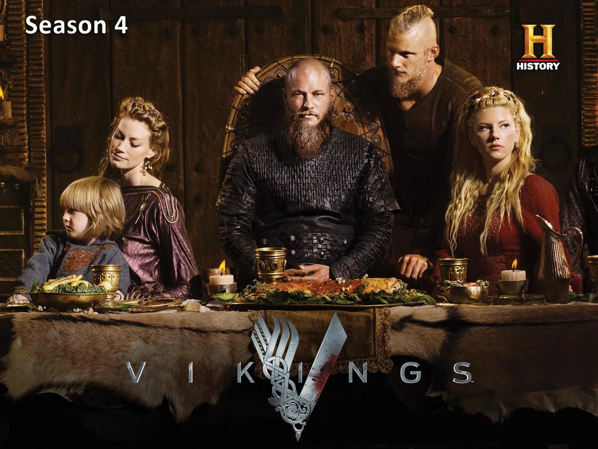
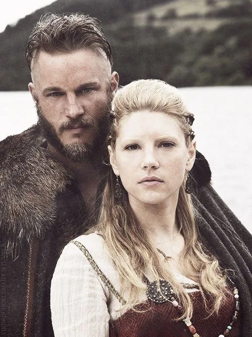
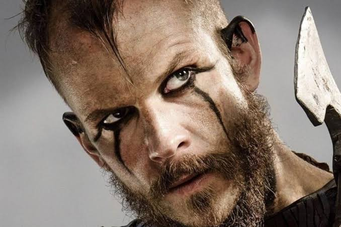
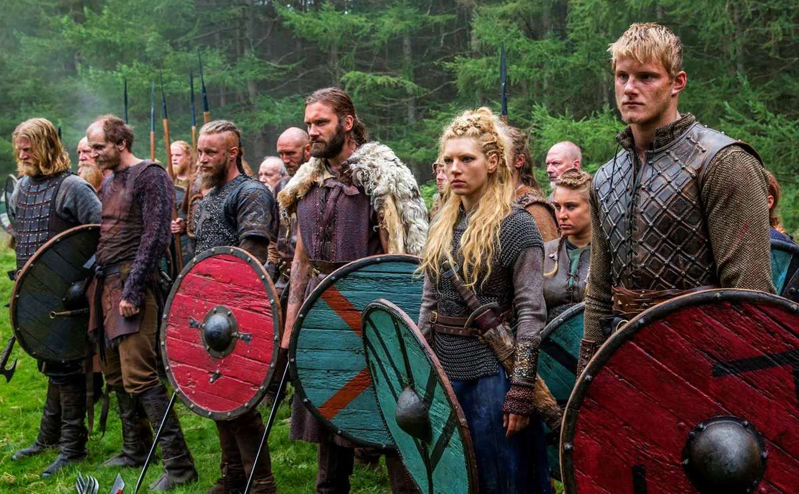

Ragnar Lothbrok

Actor: Travis Fimmel
Travis Fimmel interpreta a un Ragnar curioso y ambicioso. Puede convencer a otros de seguirlo, aunque no siempre tenga claro qué precio pagará por sus planes.
Una mirada de Ragnar, una respuesta de Lagertha o una risa de Floki alcanzan para reconocerlos. Conocé a los actores detrás de estos personajes.

Actor: Travis Fimmel
Travis Fimmel interpreta a un Ragnar curioso y ambicioso. Puede convencer a otros de seguirlo, aunque no siempre tenga claro qué precio pagará por sus planes.

Actriz: Katheryn Winnick
Katheryn Winnick da vida a Lagertha, una guerrera que busca decidir por sí misma. Su fuerza también aparece cuando debe afrontar pérdidas y empezar de nuevo.

Actor: Gustaf Skarsgård
Gustaf Skarsgård interpreta a Floki, el constructor de barcos del grupo. Su humor y su lealtad a los dioses lo vuelven tan entrañable como difícil de entender.

Con el paso de las temporadas, los hijos de Ragnar ganan espacio. Traen sus propias ideas y conflictos, y cambian la relación entre los personajes que ya conocemos.